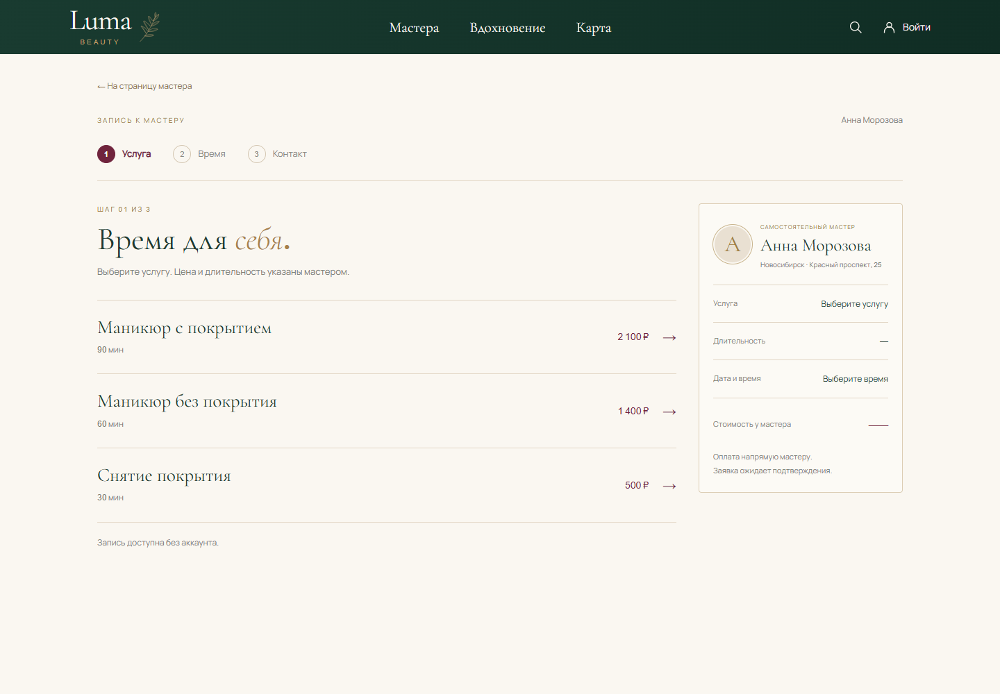
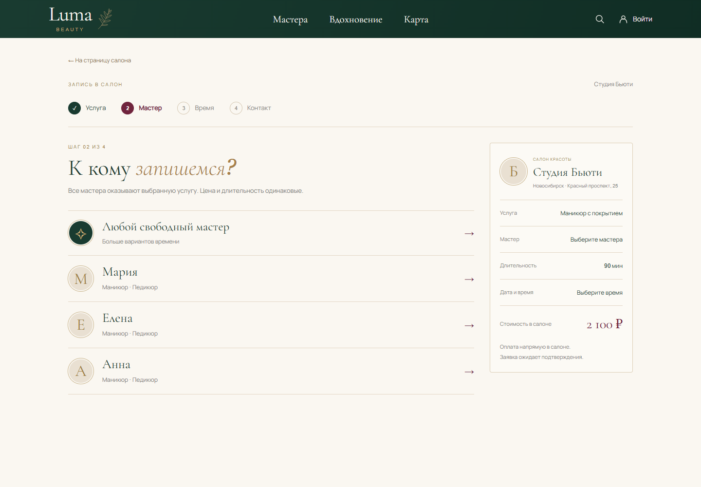
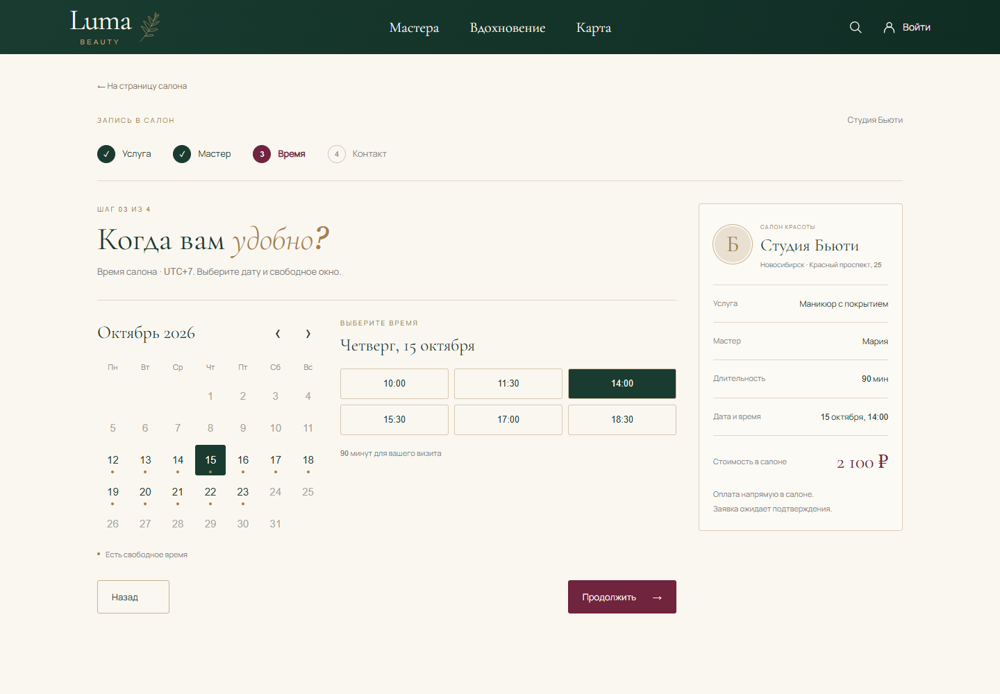
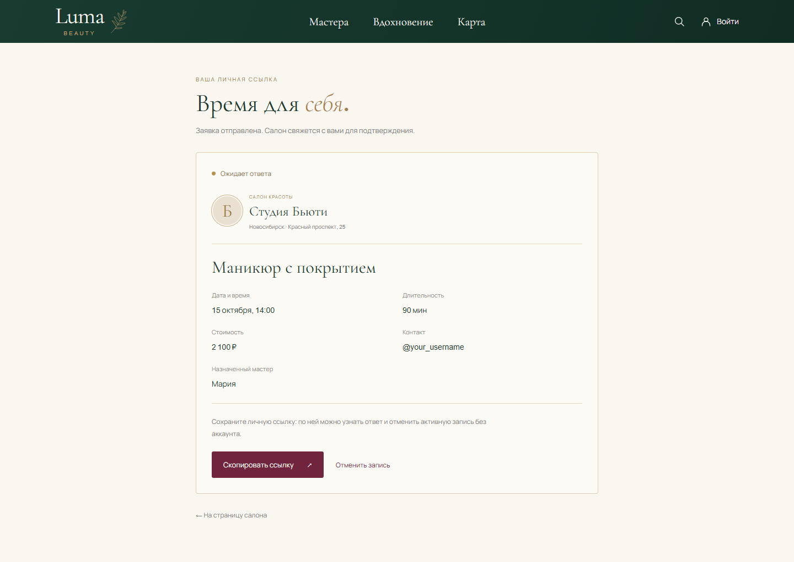
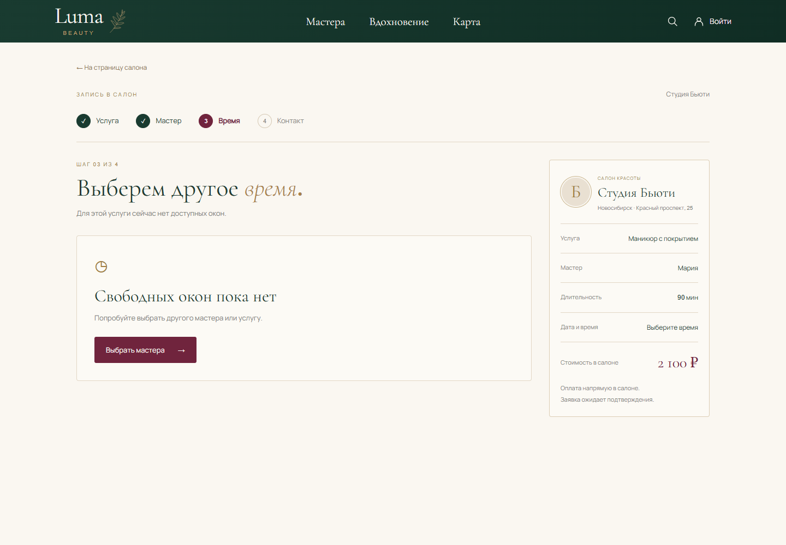

Luma Beauty · пошаговая запись
U-08 · предложение review-01 · desktop и mobile в опубликованной визуальной системе
01 · Услуга у мастера

02 · Выбор сотрудника салона

03 · Дата и время

05 · Заявка и личная ссылка

06 · Нет свободных окон
